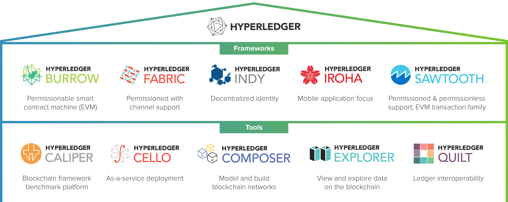

# 1. 블록체인 이해하기
# 1.1 블록체인이란?
# 1.1.1 분산 원장
분산원장 distributed ledger은 블록체인을 구성하는 가장 중요한 요소 중 하나다.
또한, 블록체인을 탈중앙화된 시스템으로 만들어 주는 핵심 기술이다.
블록체인에 참여하는 모든 사람이 동일한 원장을 소유하고 관리하는 기술이다.
블록체인 분산원장은 모든 정뽀가 해시화되어 append-only 방식으로만 원장에 저장된다.
그래서 한번 원장에 기록된 정보들은 절대 수정할 수 없다. 즉, 불가변성immutability의 특성을 가진다.

[그림1] 블록체인의 append-only 저장방식
# 1.1.2 스마트 컨트랙트
블록체인 잠여자는 스타므 컨트랙트 smart contract를 통해서 분산 원장에 정보를 기록하거나 읽을수 있다.
또한 스마트 컨트랙트를 이용하여 단순히 거래정보를 읽고 쓰는 것뿐만 아니라 프로그래밍을 통해 거래 자동화 등의 다양한 응용프로그램을
만들 수도 있다.
스마트 컨트랙트를 좀 더 편리하게 사용하기 위해 개발되는 프로그램을 분산 애플리케이션 decentralized application, (DApp)
이라고 한다.
# 1.1.3 합의
블록체인에 참여한 모든 노드 중 암호화된 퍼즐의 답을 가장 먼저 찾아내는 노드의 블록을 최신 블록으로 업데이트하는 PoW (Proof of Work) 방식있다.
그외 PoS, BFT와 같은 합의 알고리즘이 있다.
Hyperledger Fabric에서는 조금 다른 관점으로 합의 알고리즘을 정의한다.
- 보증 정책 확인
- 트랜잭션을 정해진 순서에 맞춰 정령
- 정렬된 트랜잭션의 유효성 검증 후 최신 블록 업데이트
# 1.2 블록체인은 어떻게 사용될 수 있을까
# 1.2.1 오늘날의 비즈니스 모델
오늘날 대부분의 비즈니스 모델에서는 신뢰성 있는 거래를 위해 중개자 intermediary가 필요하다.
# 1.2.2 블록체인 비즈니스 모델
블록체인 비즈니스 모델에서는 중개자가 없기 때문에 중개 수수료를 절감함과 동시에 하나의 일관된 시스템에서 거래가 발생하므로 자산 증명에 대한 시간과 비용을 절약할 수 있다.
# 1.3 Hyperledger Fabric 소개
# 1.3.1 Hyperledger 프로젝트 소개
2015년, 리눅스 재단에서는 기업용 블록체인 개발을 위해 Hyperledger 프로젝트를 만들었는데, 오픈소스 형태의 프로젝트이다.
Hyperledger Project는 다음과 같이 크게 나눠진다.
- Hyperledger Frameworks
- Hyperledger Tools
# 하이퍼레저 프레임워크
Hyperledger Frameworks는 분산원장, 스마트 컨트랙트, 합의 알고리즘 등 블록체인에 대한 원천적인 기술을 개발하는 프로젝트이다.

[그림2] 하이퍼레저 프레임워크와 툴
Hyperledger Fabric
가장 활발하게 활동 중인 하이퍼레저 프로젝트로서 IBM이 제공한 44,000줄의 코드 기반으로 개발되고 있다. MSP
membership service provider기반의 접근 제어 기능을 제공하고 트랜잭션을 블록에 정렬한 후 합의하는 방법으로 현재 Solo, Kafka, SBFT(향후 개발 예정)있다.Hyperledger Sawtooth
Intel의 Intel Distributed Ledger 를 바탕으로 개발되었으며 SGX
secure guard extension을 이용해 구현한 PoET(Proof of Exlapsed Time) 합의 알고리즘을 사용한다.
# 하이퍼레저 툴
하이퍼레저 툴 Hyperledger tools은 블록체인 시스템의 성능 측정, 운영, 개발을 쉽게 할수 있도록 도와주는 툴을 개발하는 프로젝트이다.
대표적으로 Caliper, Cello, Explorer 등이 있다.
# 1.3.2 하이퍼레저 패브릭 개요
하이퍼레저 패브릭은 가장 왕성하게 활동 중인 하이퍼레저 프로젝트이다.
허가형 프라이빗 블록체인(Permissioned and Private Blockchain) 형태로 개발되었으며, 이더리움, 비트코인 등 누구나 참여할 수 있는
퍼블릭 블록체인과는 달리 MSP(Membership Service Provider)라는 인증 관리 시스템에 등록된 사용자만이 블록체인에 참여할 수있다.
채널(channel)이라는 개념을 도입해서 블록체인 참여자들 간의 프라이버시를 강화했다.